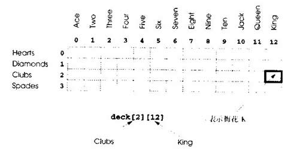

本节用随机数产生器开发一个洗牌与发牌程序。这个程序可以用于实现玩某种牌的游戏程序。
为了解决一些微妙的性能问题，我们故意用次优洗牌与发牌算法。练习中要开发更有效的算法。
利用自上而下逐步完善的方法，我们开发一个程序，洗52张牌并发52张牌。自上而下逐步完善的方法在解决大而复杂的问题时特别有用。
我们用4 x 13的双下标数组deck表示要玩的牌(如图5．23)。行表示花色，0表示红心，1表示方块，2表示梅花，3表示黑桃。列表示牌的面值，0到9对应A到10,10到12对应J、Q、K。我们要装入字符串数组suit，用字符串表示4个花色,用字符串数组face的字符串表示13张牌的面值。
这堆牌可以进行如下的洗牌：首先将数组deck清空，然后随机选择row(0--3)和column(0—12)。将数字插入数组元素deck[row][column](表示这个牌是洗出的牌中要发的第一张牌)。继续这个过程，在deck数组中随机插入数字2、3、…52，表示洗出的牌中要发的第二、三、…、五十二张牌。在deck数组填上牌号时，一张牌可能选择两次，即选择的时候deck[row][column]为非0值。
忽略这个选择，随机重复选择其他row和colunm，直到找出未选择的牌。最后，在52个deck元素中插入1到52的值。这时，就完全洗好了牌。
图5．23 双下标数组deck表示要玩的牌
这个洗牌算法在随机重复选择已经洗过的牌时可能需要无限长的时间。这种现象称为无穷延迟(indefinite postponement)。练习中将介绍更好的洗牌算法，消陈无穷延迟。
有时自然方式的算法可能包含无穷延迟等微妙的性能问题，应寻找能避免无穷延迟的算法。
要发第一张牌，我们要寻找匹配1的deck[row][column]元素，这是用嵌套for结构进行的，n，w取。到3t column取。到12。这个数组元素对应哪种牌呢suit数组预先装入了四种花色，因此要取花色，只要打印字符串suit[row]；同样，要取牌值，只要打印字符串face[column]还要打印字符串”of "，按正确的顺序打印，即可得到每张牌如”King of Clubs"、”Ace of Diamonds'，等等。
下面用自上而下逐步完善的方法进行。顶层为：
Shuffle and deal 52 cards
第一步完善结果为：
Initialize the suit array Initialize the face array Initialize the deck array Shuffle the deck Deal 52 cards
”Shumelhedeck”可以展开成：
For each of the 52 cards Place card number in randomly selected unoccupied slot of deck
"Deal 52 cards" 可以展开成:
For each of the 52 cards Find card number in deck array and print face and suit of card
合在一起得到第二步完善结果为：
Initialize the suit array Initialize the face array Initialize the deck array For each of the 52 cards Place card number in randomly selected unoccupied slot of deck For each of the 52 cards Find card number in deck array and print face and suit of card
"Place eard numberin radomly selected unoccupied slot of deck" 可以展开成：
Choose slot of deck randomly While chosen slot of deck has been previously chosen Choose slot of deck randomly Place card number in chosen slot of deck
"Find card numberin deck array and printface and suit of card" 可以展开成:
For each slot of the deck array If slot contains card number Print the face and suit of the card
合在一起得到第三步完善结果为：
Initialize the suit array Initialize the face array Initialize the deck array For each of the 52 cards Choose slot of deck randomly While slot of deck has been previously chosen Choose slot of deck randomly Place card number in chosen slot of deck For each of the 52 cards For each slot of deck array If slot contains desired card number Print the face and suit of the card
这样就完成了完善过程。注意，如果将洗牌与发牌算法组合成每张牌在放到牌堆上时进行发牌，则这个程序能更加有效。我们选择分别编程这些操作，因为通常是先洗后发，而不是边洗边发。
图5．24显示了洗牌与发牌程序，图5．25显示了示例执行结果。注意函数deal中使用的输出格式：
cout << setw( 5 ) << setiosflags( ios::right ) << wFace[ column ] << "of" << setw( 8 ) << setiosflags( ios::left ) << wSuit[ row ] << (card % 2 ==0 '\n': '\t');
上述输出语句使牌的面值在5个字符的域中右对齐输出，而花色在8个字符的域中左对齐输出。输出打印成两列格式。如果输出的牌在第一列，则在后面输出一个制表符，移到第二列，否则输出换行符。
// Fig. 5.24: fig05_24.cpp // Card shuffling and dealing program #include <iostream.h>
#include <iomanip.h>
#include <stdlib.h>
#include <time.h> void shuffle( iht [][ 13 ] ); void deal( const int [][ 13 ], const char *[], const char *[] ); int main() { const char * suit[ 4 ] = { "Hearts", "Diamonds", "Clubs", "Spades" }; const char * face[ 13 ] = { "Ace", "Deuce", "Three", "Four", "Five", "Six", "Seven", "Eight", "Nine", "Ten", "Jack", "Queen", "King" }; int deck[ 4 ][ 13 ] = { 0 } ; srand( time( 0 ) ); shuffle( deck ); deal( deck, face, suit ): return 0; } void shuffle( int wDeck[ ][ 13 ] ) { int row, column; for(int card = 1; card <= 52; card++ ) { do{ row = rand() % 4; column = rand() % 13; } while( wDeck[ row ][ column ] != 0 ); wDeck[ row ][ columo ] = card; } } void deal( const int wDeck[ ][ 13 ], const char * wFace[ ] , const char *wSuit[] ) { for (int card = 1; card <= 52; card++ ) for ( int row = 0; row <= 3; row++ ) for ( int column = 0; column <= 12; column++ ) if ( wDeck[ row][ column ] = card ) cout << setw(8) << setiosflags( ios::right ) << wFace[ column ] <<" of" << setw( 8 ) << setiosflags( ios::left ) << wSuit[ row ] << ( card % 2 == 0 ? ,'\n' : '\t' ); }
输出结果：
Six of Clubs Seven of Diamonds
Ace of Spades Ace of Diamonds
Ace of Hearts Queen of Diamonds
Queen of Clubs Seven of Hearts
Ten of Hearts Deuce of Clubs
Ten of Spades Three of Spades
Ten of Diamonds Four of Spades
Four of Diamonds Ten of Clubs
Six of Diamonds six of Spades
Eight of Hearts Three of Diamonds
Nine of Hearts Three of Hearts
Deuce of Spades six of Hearts
Five of Clubs Eight of Clubs
Deuce of Diamonds Eight of Spades
Five of Spades King of Clubs
King of Diamonds Jack of Spades
Deuce of Hearts Queen of Hearts
Ace of Clubs King of Spades
Three of Clubs King of Hearts
Nine of Clubs Nine of Spades
Four of Hearts Queen of Spades
Eight of Diamonds Nine of Diamonds
Jack of Diamonds Seven of Clubs
Five of Hearts Five of Diamonds
Four of Clubs Jack of Hearts
Jack of Clubs Seven of Spades
发牌算法中有个缺点，一旦找到匹配之后，即使第一次就找到，两个内层的for结构仍然继续搜索deck中的其余元素。练习中要纠正这个缺点。